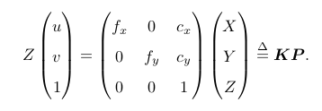

google_c++编程风格指南
指南简介
谷歌开源项目主要是C++，因此开放编程指南方面合并代码，总共五万字指南涉及广泛，论证严密。指南不仅列出怎么做以及为什么这么做，同时告诫什么情况可以破例以及权衡其中利弊。
背景
由于C++强大的特性，容易产生难以阅读和维护的问题，有时候需要限制部分特性以保持代码清爽。
头文件
头文件：每个.cc对应一个.h，main和单元测试除外
自给自足原则（self-contained）：一个头需要包含自身所需的其他头，同时使用#define保护；若非如此，头需要特定平台的symbols则用.inc扩展名。
所有头应使用#define防止多重包含，保证唯一性。
使用前置声明
先声明，后面再定义。
优点：
- 节省编译时间，多余#include迫使编译器展开文件，处理更多输入
- 节省重新编译时间，#include使代码因头文件无关改动而重新编译多次
缺点：
- 隐藏了依赖关系，头文件改动时跳过必要的重新编译过程
- 可能被库的后续更改所破坏
- 声明来自std::的symbol，其行为未定义
- 难以判断何时使用前置声明还是#include，极端情况甚至暗暗改变代码含义
总结：
- 尽量避免前置声明那些定义在其他项目中的实体
- 函数：总是使用#include
- 类模板：优先使用#include
内联函数
只有10行以内才定义内联，直接代码展开
优点：目标代码高效，关键函数可内联
缺点：滥用会使代码量增大
总结：
- 谨慎对待析构函数内联，隐含的成员和基类析构会被调用
- 内联包含循环或switch语句的函数常常得不偿失
- 编译器不会把虚函数和递归函数内联
#include路径及顺序
项目内头文件应按项目源码目录树结构排列，避免使用UNIX特殊的快捷目录.或..
e.g. #include “dir2/foo2.h”头文件的次序:
- 1.dir2/foo2.h
- 2.C系统文件
- 3.C++系统文件
- 4.其他库的.h文件
- 5.本项目内的.h文件
条件编译
1 |
译者笔记：
- 避免多重包含是最基本的要求
- 前置声明是为了降低编译依赖，防止修改文件头引起多米诺效应
- 内联函数合理使用可提高代码效率
- 独立内联头-inl.h可提高代码可读性
- 使用完整项目路径可减少隐藏依赖，保证内部错误及时发现
- 前置声明的类为不完全类型，只能定义指向的指针或引用
- 类内部函数自动内联，建议独立放入.cc文件，贯彻声明与定义分离原则
- #include中插入空行以分离头文件，C库，C++库以及其他库.h和本项目.h
作用域
命名空间将全局作用域细分为独立作用域，可有效防止全局命名冲突
内联命名inline namespace只允许用于跨版本的ABI兼容性
默认命名空间：main存在的常用的，其他空间调用可::func
匿名空间：无名namespace{},主要用途：1.定义符号限于文件内部使用，不被外部引用 2.类似static修饰整个空间内容
关于使用命名空间的策略标准：
- 允许鼓励匿名命名空间，避免运行时命名冲突
- 不在std空间声明任何东西，会引起不可移植性
- 尽量不用using namespace name;污染命名空间
- 允许使用空间别名
- 禁止内联命名空间
嵌套类
即成员类用法
缺点：嵌套类只能在外围类的内部做前置声明，即任何使用Foo::Bar*的指针头文件必须包含Foo的整个声明。
用法：不要定义为公有，除非是接口的一部分。
九章基础class_5_6
第五课 双序列DP
再次强调，可能为DP的问题： 记忆化搜索
- Max/Min问题
- True/False问题
- 计数问题
可能不是DP问题的 - 需要所有“具体”的方案
- 输入是“集合”而非“序列”
例题：a,b两串的Longest Common Sequence的长度
state: dp[i][j], a前i子串匹配b前j子串的LCS长度
function: dp[i][j] = dp[i-1][j-1] + 1 if a[i]==b[j]
dp[i][j] = max(dp[i-1][j],dp[i][j-1]) if a[i]!=b[j]
init: dp[i][0]=0, dp[0][j] = 0;
ans:dp[a.size()][b.size()]
重点：序列a,b挑出i,j子序列的dp
- dp[i][j]定义
- dp[i][j]的转换以及从i,j为结尾的情况考虑
总结：
- 归纳可能使用或不使用DP的规律
- DP四要素：状态，转换方程，初始化和答案
- 三种常见面试DP：矩阵，单序列，双序列
- 奇技淫巧：初始化首行首列， N个数开N+1位置的数组
背包问题
定义：n个整数，装m的背包
state: f[i][j]“前i”个数，能否组成和为j
function: f[i][j] = f[i-1][j-a[i]] or f[i-1][j]
init: f[x][0] = true; f[0][1-m] = false;
ans: f[n][x]为true 的最大值的x
当前行只跟上一行i-1有关：滚动数组优化，用模2; 如与i-1, i-2有关，则模3；如此类推。
TO DO：较难，待补充具体解法
第六课 链表
目标：
- Dummy Node哨兵节点
- 相关基本技巧
- 快慢指针：删N节点，找环
- head!=nullptr head->next!=nullptr
- 删除：pre.next = cur.next
- 头节点要改变，引入dummy node；可不用单独判断链表头的情况，代码更简洁
- swap(pre, now) 翻转链表
Dummy Node常用场合
1.有序链表去重复元素
2.翻转链表
3.合并两个有序链表
4.分割链表
归并排序链表：
- 1.找中点，快慢指针
- 2.拆分左右
- 3.排序序列
- 4.合并
合并K个链表：
- 用priority_queue<ListNode*, vector<ListNode*> , comp>最大堆来优化
- 分治两两合并
copy随机链表，每个节点带next和random：
- hash记录克隆节点（遍历一次）
- 基于节点克隆边
2022第一季度总结
工作上
本职工作
由于产品部对预研项目的信心和期望不高，今年头三个月我主推的项目基本没有进展。于是我在本来就量产项目为重的小公司里面地位更卑微了，随时有被毕业的风险，也可能是因为薪资不高，反正我现在有点“食之无味，弃之可惜”的味道了。只能趁着这段时间多学习，多看看论文，多写写代码。希望能让自己的职业生涯有点起色。
虽然入职以来沟通能力和代码能力未见长足的进步，但是空间思考能力、阅读能力以及专利能力都有所提升，跟着一哥学习思考的深度也有一定程度的进步。值得一提的是，由于3月两篇专利的贡献，个人还获得部门月度之星的殊荣，个人还是很需要鼓励和积极的心态的。希望自己再接再砺，勇往直前！
工作之余
积极了解互联网行业具体情况和进展，当初正因为自己疏于认真准备找工作，缺乏了必要技能的锻炼。自然而然也没能获得一个良好的职业规划，在年至30之际才幡然醒悟，重新准备出发。查漏补缺，刷刷题目，学学新东西。一个好的技术人员，必须与时俱进，时刻维护自己的知识体系，丰富个人的武器库。
认识了梓淳，认真分析自己的经历以及能力，确实自己缺乏始终如一的目标以及深度认真学习工作的高效能力，加之受个人性格以及情绪影响，错过各种锻炼成长的机会。如今开始，认真提升自己的能力，不再像以往朝三暮四地另辟蹊径，而是朝着可能的方向一步步前进，反而是最好的结果。
学习上
目前工作生活的节奏其实非常好，应该抓紧每一分钟来提升自己，然而很多时候自己是缺乏提升的方向，而非动力。有时候总是担心这个目标太遥远又或者这个些目标不是想要的，以至于始乱终弃。
最近求职潮可以发现，个人学历条件是一方面，力扣能力以及专项能力才是工作上的考察重点。多年逃避的刷题能力，始终还是得面对，何不早日攻克，早日完成自我的蜕变。当自己老了，看着满满的leetcode和github应该还是会有所骄傲的吧。30已经是一个人的分水岭了，更年轻的自己也没有放手一搏去折腾，如今的自己更是除了干本专业也就别无他选了，那么请认真过好每一天吧！
第一季度的学习指标包括：
- 阅读：线代漫画 医本正经 泡脚攻略
- 编程：基础班class 4, 学习了递归分治DP
- 专项：SLAM CH7 / 云台专利
说实话，目标提出来了，但是效率没有达到。主要个人缺乏高效的执行力以及深度工作的能力，这些都需要继续培养改进，每天反复提醒自己目标以及高效执行。可借助冥想正念以及镜子激励方法。
生活上
经过深圳祥和堂的正骨师傅泡洗和外涂药膏调理，大小腿上的湿疹已经慢慢消退，不再痕痒了。脚背上的厚厚褶皱倒是一时半会没办法消除，而每每手抓会引起痕痒，庆幸的是自己经历过最痛苦的时光，自制力已然可以控制住了，只是要让皮肤完完全全恢复如初也有一定的挑战。这个病痛历时三年之久，打击了我的青春，同时也打击了我的事业，人生跌入低谷。而终于迎来这么一天，开始触底反弹，身体和精神好起来了，1就有了。其他0还会远吗！这段经历也让我重新审视学习起中医，包括推拿针灸泡脚药膳艾灸等。身体健康，愿每一个人都拥有健康的身体，美好的人生。
其次，回看上年总结，除了工作上没有收获到满满的成就感，得到同事们的认可，其余一切皆好，生活诚然有压力，但相信自己能迎接挑战，一天比一天美好！
九章行测
九章基础class_3_4
第三课 分治
先序： 根 左 右
后序： 左 右 根
中序： 左 根 右
遍历方法：
- 递归方法：一句话描述递归函数，如把根节点放入res里；
- 优化成非递归：借助栈的数据结构，动手背诵；
- 分治，分解攻克：问题分成两半，或者多份，分别解决再合并答案；带return value的递归方法; 二叉树的通用解法
递归方法：退出条件，节点为空如何处理；问题分成左右两半怎么处理；分治方法递归一般带相同返回类型参数。
1 | // 递归法： |
DFS分治法解决归并排序，快速排序以及大部分二叉树问题。
树型分析法来分析复杂度:如归并排序为O(nlogn),logn层，每层合并需遍历每个元素n,O(1)分，O（n)治，需要额外O（N）空间，保证稳定排序；快速排序一样为O(nlogn),用O（n)分，O(1)治，不是稳定排序。一个先局部后整体，一个先整体后局部的分治方法。
BFS广度优先搜索
逐层执行的实现方法：
- 两个queue: 导来导去
- 一个queue+dummy node:加入层分割符
- 单queue(best)： 一层一层往下走
1 | vector<vector<int>> levelOrder(TreeNode *root) { |
要求掌握：
- 递归：遍历和分治
- 非递归实现： 前序和中序
- 利用queue的BFS实现
第四课 DP
动态规划：利用已经计算的结果求解新的结果
结合分治方法，带脑子搜索；脑子可以是二维数组，也可以是哈希表，的记忆化搜索。动规本质解决了重复计算的搜索。
动规的问题解法：1.递归 2.分治 3.记忆搜索 4.循环求解 5.自底向上（逆向） 6.自顶向下（正向）
动规常见题目状态类型：
- 矩阵DP （10%）
- 序列（40%)
- 双序列DP（40%）
- Backpack(10%)
极有可能是动规的题目条件：
- 1.Maximum/Minimum
- 2.Yes/No
- 3.Count(*)
极不可能为动规：
- 求出所有”具体”的方案，而非“个数”
- 输入是无顺序的“集合”而非“序列”
DP四要素：
- 状态 State: 存储小规模问题的结果
- 方程 Function: 状态联系，小的状态计算大的状态
- 初始化 Initialization: 最小的状态，起点
- 答案 Answer: 最大的状态，终点
对于二维matrix，初始化第0行和第0列。
1 | // Matrix DP |
与贪心的区别：DP先决策，再执行；贪心直接基于当前执行。一般做题用贪心都是不符要求的。
与分治的区别：分治需要递归；DP着重解决重复运算；
如果路径上下左右则无法DP，属于图论。
五大常用算法：分治、贪心、DP、回溯、穷举
分治问题特征：
- 问题规模缩小到一定可容易解决
- 问题可分解为若干规模小的相同问题
- 重要特征：分解的子问题的解可合并为大问题的解
- 各子问题相互独立，不含公共子子问题
若不满足第三条，可考虑贪心或DP。
DP问题性质：
- 最优化：问题的最优解包含在子问题的最优解中
217.存在重复元素
题目
给你一个整数数组 nums 。如果任一值在数组中出现 至少两次 ，返回 true ；如果数组中每个元素互不相同，返回 false 。
示例 1：
输入：nums = [1,2,3,1]
输出：true
示例 2：
输入：nums = [1,2,3,4]
输出：false
示例 3：
输入：nums = [1,1,1,3,3,4,3,2,4,2]
输出：true
解法
一.个人方法，使用map<int, string>作hashmap
1 | class Solution { |
二.先排序，然后检查相邻是否相等重复
1 | bool containDuplicate(vector<int>& nums){ |
三.用unordered_set的哈希表
1 | bool containDuplicate(vector<int>& nums){ |
相关知识
map
关联容器，一对一，第一个关键字只能出现一次，内部为自建红黑数（非严格平衡二叉树），可对数据自动排序。
map的特点时增删节点开销小，迭代器可以修改value,但不能修改key.查找数据复杂度为Log(N)
1 |
|
C++ maps是一种关联式容器，包含“关键字/值”对
begin() 返回指向map头部的迭代器
clear(） 删除所有元素
count() 返回指定元素出现的次数
empty() 如果map为空则返回true
end() 返回指向map末尾的迭代器
equal_range() 返回特殊条目的迭代器对
erase() 删除一个元素
find() 查找一个元素
get_allocator() 返回map的配置器
insert() 插入元素
key_comp() 返回比较元素key的函数
lower_bound() 返回键值>=给定元素的第一个位置
max_size() 返回可以容纳的最大元素个数
rbegin() 返回一个指向map尾部的逆向迭代器
rend() 返回一个指向map头部的逆向迭代器
size() 返回map中元素的个数
swap() 交换两个map
upper_bound() 返回键值>给定元素的第一个位置
value_comp() 返回比较元素value的函数
unordered_set
基于哈希表的unordered_set和unordered_map区别于基于红黑树的set和map，内部无须，查找效率O（1）用空间换时间。原型为unordered_set
1 |
|
九章基础class_1_2
第一课 Intro
strStr问题
常见问题： 上来直接说KMP算法（过难）
可以确认面试的考察点，比如时间复杂度和空间复杂度
1 | class Solution{ |
面试误区：
- 做过的题肯定能过
- 算法想出来就能过
- 代码写出来就能过
面试官眼中的求职者：可能是未来的同事
- 你的代码看起来舒服吗？需要多少时间REVIEW
- 你的Coding习惯好吗？不会未来疲于帮你debug，动不动搞挂网站
- 你的沟通能力好吗？和你交流费劲吗
主要考察编程的基本功：
- 程序风格（缩进，括号，变量名）
- Coding习惯（异常检查，边界处理）
- 沟通（让面试官时刻明白你的意图）
- 测试（主动写出合理的TestCase)
面试技巧：
- 在白纸能写吗
- 刷过的题，吃透了多少
明确一点：算法，其实很简单。类似于高考做题，刷题需要总结
- 归类相似的题目
- 找出适合的模板程序
- 掌握递归算法，掌握区分度
第二课 BST
二分搜索通用模板
1 | int binarySearch(vector<int> &A, int target) |
相关题目：二分查找first order/ last order, 二分查找区域， 二分插入数值， 增长矩阵二分查找等
注意带重复元素不能用二分
三步翻转法
SLAMBOOK_7_8
视觉里程计
主要目标：
- 理解图像特征点的意义，掌握单幅图像提取特征点及多幅图像中匹配特征点的方法
- 理解对极几何原理，利用对极约束，恢复图像之间的camera位姿
- 理解PnP问题，利用已知三维结构与图像对应关系，求解camera位姿
- 理解ICP问题，利用点云匹配关系，求解camera位姿
- 理解三角化获得二维图像上对应点的三维结构
图像特征性质：多图可重复、可区别、高效率、本地性
对极几何：从两张RGB图的特征匹配中求解本质矩阵，从而推出R，t.由8组特征匹配对SVD求解有4个可能解，幸运地只有一个解均在两个相机的光轴正向。但因缺乏深度尺度，所以t为单位1.
不稳定的问题：1.初始化纯旋转t为0，三角化R不稳定； 2.多于8个特征匹配点可用最小二乘或者RANSAC方法求E，F，H；
三角测量：将两个二维点对以及之间的位姿变换输入opencv的triangulatePoints中，得到点对的三维空间坐标；由于三角测量由平移产生，引出核心矛盾：平移小，则像素有较大深度不确定性；平移大，则图像外观变化大，特征匹配困难。
PnP:载入两张RGB图及其中一张对齐的Depth图，使用opencv的solvePnP解三维点对及二维点对的外参位姿变化R，t;
Bundle Adjustment：用于最小化重投影误差，将观测到的三维空间点与当前估计位姿投影位置得到的误差。考虑匹配特征点上的最优化重投影。
ICP方法：载入两个位姿状态的RGBD图，图像匹配后获得匹配好的3D点对，直接采用线性代数的求解（SVD）及BA优化获得最佳外参位姿即可。
课后习题
1.图像特征点原理及区别
Harris角点：基于图像灰度的一阶导数滤波检测，主要依赖与移动方向窗口内图像块的相似性。
SIFT/SURF：1.构建高斯差分金字塔 2.准确提取关键点 3.结合邻域构建描述子
2.opencv接口，SIFT::create(nfeatures, nOctavelLayers, constrastThreshold, edgeThreshold, sigma);
特征数量，金字塔最小层数，特征过滤阈值，边缘过滤阈值，高斯层级。
默认参数下，1000个SIFT特征点用时0.15s;
3.如何让特征点分布更均匀：goodFeatureToTrack(GFTT)方法
4.特征匹配方法有哪些？
FLANN快速最近邻搜索包，大数据下比BFMatcher暴力搜索要佳。FLANN主要三种算法：KD tree, k-means tree, hiearachy tree;
5.其他PNP方法：EPNP精度较高，复杂度为O（N）.DLT更快，精度下降。
6.G2O可把两图的空间点都加进来一起优化
7.图像误匹配影响整体优化效果，可以通过鲁棒核函数降低影响程度，同时引入RANSAC.
视觉里程计2
本章目标：
- 理解光流法特征点跟踪
- 理解直接法估计相机位姿
- 使用G2O进行直接法计算
SLAMBOOK_5_6
相机与图像
本章目标：
- 理解针孔模型、内参以及径向畸变参数
- 理解空间点如何投影到相机成像平面
- 掌握OpenCV图像存储与表达
- 掌握基本的摄像头标定方法
针孔模型
三维空间点与相机成像平面建模关系
$$\frac{Z}{f} = \frac{X}{X^,} = \frac{Y}{Y^,}$$
像素坐标系与成像平面间相差了一个缩放和原点的平移： $u = \alpha X^, + c_x, v=\beta Y^, + c_y$
将空间点与成像平面的公式代入，习惯性把Z左挪得到下式
.其中f单位为米，$\alpha，\beta$单位为像素每米，$f_x,f_y$单位为像素。K为相机内参，通常厂商会帮你标定给出，有时候需要自己确定或精细测量，就是摄像头标定。
为了更好成像效果，通常加入透镜，因此带来影响：1.透镜自身形状对光线传播的影响；2.机械组装透镜与成像平面不可能完全平行； 因此引入径向畸变和桶形畸变，它们引入的畸变均随着离中心的距离增加而增加。
纠正畸变过程：
- 1.将三维空间点投影到归一化图像平面，坐标为$[x,y]^T$
- 2.归一化平面的点进行经过5个参数进行径向和切向畸变校正：
$$x_{corrected} = x(1+k_1r^2+k_2r^4+k_3r^6) +2p_1xy +p_2(r^2+2x^2) $$
$$y_{corrected} = y(1+k_1r^2 +k_2r^4+k_3r^6)+p_1(r^2+2y^2)+2p_2xy$$ - 3.纠正后的点通过内参矩阵投影到像素平面，得到图像上正确的位置，生成新的纠正后的图像
$$u=f_xx_{corrected}+c_x$$
$$v=f_yy_{corrected}+c_y$$
总结单目相机成像过程：
- 1.首先世界坐标系下有一个固定点P，世界坐标为$P_w$
- 2.由于相机在运动，它运动由R,t或者变换矩阵T描述。P的相机坐标为$\hat{P_c} = RP_w +t$
- 3.此时$\hat{P_c}$仍由X，Y，Z三个量表示，需要投影到归一化平面Z=1上，得到P的归一化相机坐标：$P_c=[X/Z,Y/Z,1]^T$
- 4.最后将归一化坐标经过内参对应到像素坐标：$P_{uv}=KP_c$
个人思考：归一化坐标主要因为内参标定建立在一个参考平面，最general的就是建立在z=1米的参考平面上。这是由内参标定的参考平面决定的。
双目模型
水平放置左右相机在x轴上位移，有基线b。将左右成像中的像素匹配，求出视差图d。结合模型获得深度图。视差越大，距离越近。基线长则测得距离远，计算量和精度问题，且需要图像纹理丰富变化。
RGBD相机
红外结构光：Intel RealSense 以及面TOF相机
非线性优化
目标：
- 理解最小二乘含义和处理方式
- 理解高斯牛顿和LM下降
- 学习Ceres和g2o用法
EKF不考虑历史，只关心当前时刻的状态估计；而非线性优化使用了所有时刻采集的数据进行状态估计。

贝叶斯法则，x为相机位姿，z为路标在图像上的像素位置。进一步，假设观测路标与位姿满足高斯分布，用最小化负对数可便利地求MLE。
直观而言，由于观测和运动方程噪声存在，当把估计的轨迹与地图代入SLAM模型时，方程组不会完美成立。因此对位姿的估计值进行微调，使得总体误差下降，当降到极小值即优化完毕。这就是典型的非线性优化过程。
SLAM的最小二乘具有特定结构：
- 目标函数由许多个误差的平方和组成，每个误差项只与上一时刻相关，小规模的约束
- 总体误差的增量方程具有一定的稀疏性
- 使用李代数时为无约束的最小二乘问题，若旋转矩阵引入额外约束而复杂
- 可用其他范数构建优化问题
最小二乘问题
$$min_x \frac{1}{2} ||f(x)||_2^2$$
若f(x)形式简单，可用解析解对f求x上的导数为0的极值点，再回代比较；但是SLAM的李代数导数形式时非线性方程，所以要用计算机中迭代的过程逼近：
- 1.给定初始值$x_0$
- 2.对第k次迭代寻找增量$\Delta x_k$使目标函数极小
- 3.若$\Delta x_k$足够小（位姿误差），则停止
- 4.否则$x_(k+1) = x_k + \Delta x_k$,继续2.
只需要找到local minimum,主要问题变为如何确定增量$\Delta x_k$
导数展开，只取一阶导雅可比为0，最速下降法，但过于贪心容易锯齿反而增加迭代
只取二阶导为0则引入海塞矩阵，问题规模较大使二阶导系数H不容易计算。如此一来，便促使研究引入更为实用的高斯牛顿法和LM列文伯格-马夸尔特方法。
高斯牛顿下降法 line search

不同于对x求导，这里对$\Delta x$求导
如此GN用$J^TJ$作为牛顿法中二阶Hessian矩阵的近似，优化了计算。但要求保证近似H可逆正定。但实际中可能出现为奇异矩阵或者病态，此时增量稳定性不佳导致算法不收敛。虽然GN有不少问题，但很多实用方法是从这个思想优化延伸的。
LM阻尼牛顿法
GN采用近似二阶泰勒只能在展开点附近有较好近似效果，因此对$\Delta x$添加信赖域区域，使它不能过大而不准确，这类方法也叫信赖区域法(Trust Region Method)。
如何确定可用的信赖区域？ 比较近似模型跟实际函数之间的差异
工作流程：
LM求解过程一定程度上避免线性方程组的系数矩阵非奇异和病态问题，提供更稳定准确的增量$\Delta x$
小结
数值优化和最优化是解决实际问题中的基本数学工具，可以感兴趣多了解。
非线性优化的迭代求解方案均需要提供一个良好的初始值，不同的初始值导致不同的计算即过，这是通病。因此如何提供科学的初始值以及算法阈值是很重要的事情！
对大矩阵求逆可以用QR、Cholesky分解；对大的稀疏矩阵也有相关消元分解，求增量的方法具体可了解矩阵论。
Ceres为谷歌开源库，针对非线性优化问题，主要用法：
- 定义cost function模型。书写类，定义带模板参数的()运算符，使成为拟函数Functor,从而像调用函数一样使用如类a
() - 调用AddResidualBlock将采集数据的误差项添加到目标函数：通常使用Ceres自动求导
- 设定好后调用solve函数求解
g2o进一步把SLAM优化问题用图论描述，成为图优化问题。节点表示优化变量，边为误差项。
使用流程：
1.顶点的更新函数：位姿更新需要重新定义左乘或者右乘的更新
2.顶点重置以及边的误差计算，获得所有边连接顶点的估计值
3.读写结果
课后习题总结：
1.矩阵A正定，则rank(A) = n, 可求逆。欠定则有多组解，超定则无解，有最小二乘解。
2.最速法过于贪心二迭代次数多，牛顿法需计算海塞矩阵，二者均不实用；SLAM常用GN，LM和Dog-Leg狗腿法：高斯牛顿简单高效，但病态矩阵时容易发散；LM是可信域法，略满于GN但正定性强，不易发散；狗腿与LM类似，为解决GN近似计算Hessian不准确而提出的。一般的优化库还包括Nlopt,slam++等。
3.A不满秩时，近似的H也半正定，越不正定越接近0矩阵，求逆误差越大，因此$\Delta x$越不可靠
4.狗腿法具体看https://blog.csdn.net/qq_35590091/article/details/94628887